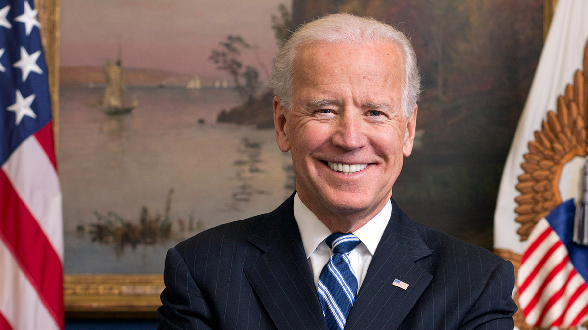

The War in Ukraine Is Getting Complicated, and America Isn’t Ready

The Senate passed a $40 billion emergency aid package for Ukraine on Thursday, but with a small group of isolationist Republicans loudly criticizing the spending and the war entering a new and complicated phase, continued bipartisan support is not guaranteed.
Avril Haines, the director of national intelligence, warned the Senate Armed Services Committee recently that the next few months may be volatile. The conflict between Ukraine and Russia could take “a more unpredictable and potentially escalatory trajectory,” she said, with the increased likelihood that Russia could threaten to use nuclear weapons.
These are extraordinary costs and serious dangers, and yet there are many questions that President Biden has yet to answer for the American public with regard to the continued involvement of the United States in this conflict.
In March, this board argued that the message from the United States and its allies to Ukrainians and Russians alike must be: No matter how long it takes, Ukraine will be free. Ukraine deserves support against Russia’s unprovoked aggression, and the United States must lead its NATO allies in demonstrating to Vladimir Putin that the Atlantic alliance is willing and able to resist his revanchist ambitions.
That goal cannot shift, but in the end, it is still not in America’s best interest to plunge into an all-out war with Russia, even if a negotiated peace may require Ukraine to make some hard decisions. And the U.S. aims and strategy in this war have become harder to discern, as the parameters of the mission appear to have changed.
Is the United States, for example, trying to help bring an end to this conflict, through a settlement that would allow for a sovereign Ukraine and some kind of relationship between the United States and Russia? Or is the United States now trying to weaken Russia permanently? Has the administration’s goal shifted to destabilizing Vladimir Putin or having him removed? Does the United States intend to hold Mr. Putin accountable as a war criminal? Or is the goal to try to avoid a wider war — and if so, how does crowing about providing U.S. intelligence to kill Russians and sink one of their ships achieve this?